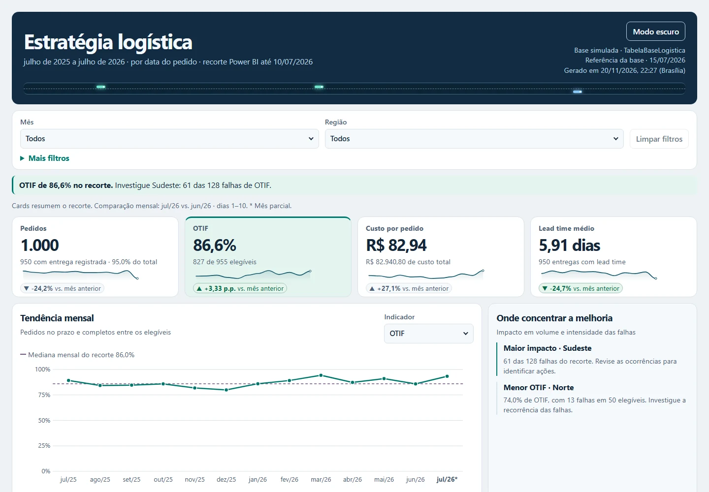
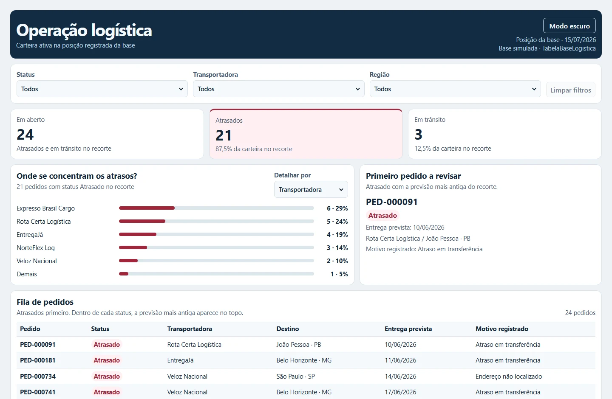

Estratégia
As entregas chegam no prazo e completas? Como evoluem custo por pedido e prazo médio? Qual região merece investigação pelo volume de falhas ou pela taxa de serviço?
Desenvolvi um dashboard em Power BI para responder duas perguntas. Onde investigar falhas de entrega? Qual pedido revisar primeiro? O case mostra como usei modelagem dimensional, DAX e OpenAI Codex via MCP para apoiar essas decisões com indicadores verificáveis.

Uma planilha reunia pedidos, datas previstas e realizadas, custos e ocorrências de uma operação logística brasileira simulada. Para decidir onde atuar, era preciso transformar o histórico em indicadores comparáveis e, ao mesmo tempo, identificar os pedidos que ainda exigiam revisão.
O desafio era separar duas perguntas. A gestão precisava distinguir onde havia mais falhas em volume de onde o nível de serviço era proporcionalmente pior. A operação precisava olhar a carteira registrada na data de referência e saber qual pedido revisar primeiro.
As entregas chegam no prazo e completas? Como evoluem custo por pedido e prazo médio? Qual região merece investigação pelo volume de falhas ou pela taxa de serviço?
Quantos pedidos estão em aberto? Onde se concentram os atrasos? Qual pedido revisar primeiro e que informações ajudam a investigar o caso?
Construí um modelo semântico compartilhado e organizei o relatório em três páginas. A Capa resume o período. A Estratégia compara nível de serviço, custo e prazo por meio de indicadores, tendência mensal e prioridades regionais. A Operação mostra a concentração dos atrasos e ordena a fila por status e pela previsão de entrega mais antiga dentro de cada status.
Padronizei tipos no Power Query, validei ID_Pedido como chave única e mantive os 50 pedidos sem data de entrega. A fato fPedidos tem uma linha por pedido. Oito dimensões filtram a fato com relações 1:* unidirecionais. A relação ativa do calendário usa Data_Pedido, de modo que a tendência compara grupos de pedidos pela data em que foram feitos.
Defini o OTIF como pedidos no prazo e completos divididos pelos pedidos com as duas flags preenchidas com Sim ou Não. Usei DISTINCTCOUNT para contar pedidos e DIVIDE para deixar a taxa em branco quando não há elegíveis. Para custo por pedido, o denominador é o total de pedidos no recorte. Para lead time, a média considera entregas registradas com prazo válido.
Capa e Estratégia recebem uma base agrupada com contagens e somas. Ao filtrar, o visual soma sucessos e elegíveis antes de dividir, preservando o peso de cada grupo. A Operação recebe dados em nível de pedido para localizar ID, previsão e motivo registrado na fila.
A comparação temporal usa janelas equivalentes. A base cobre julho de 2026 até o dia 10. Foram 25 pedidos de 1 a 10 de julho ante 33 nos mesmos dias de junho (−24,2%). A base usada para a referência do mês anterior fica fora dos totais do recorte atual.
Por onde começar na Estratégia? O Sudeste concentrou 61 das 128 falhas de OTIF, o maior volume. O Norte teve a menor taxa, 74,0% em 50 elegíveis. Esses recortes orientam duas investigações, uma pelo volume de falhas e outra pela proporção, levando em conta o tamanho de cada grupo.
Qual a prioridade na Operação? Em 15/07/2026, havia 24 pedidos na carteira registrada, sendo 21 atrasados e 3 em trânsito. O painel destaca o atrasado com a previsão mais antiga e deixa visíveis transportadora, destino e motivo registrado para apoiar a revisão.
Defini as perguntas de negócio, as regras de cálculo e os critérios de aceite. Conectei o OpenAI Codex ao modelo aberto no Power BI Desktop por meio do Power BI Authoring MCP, executado localmente via STDIO.
dax-creation-expert orientou modelagem, medidas e testes. A dataviz-html-dax orientou os contratos de apresentação, os visuais e o comportamento dos filtros. Os prompts registram requisitos e critérios de aceite.Comece pela Estratégia. Filtre uma região para comparar serviço e custo ou navegue para Operação e confira o primeiro pedido da fila.

